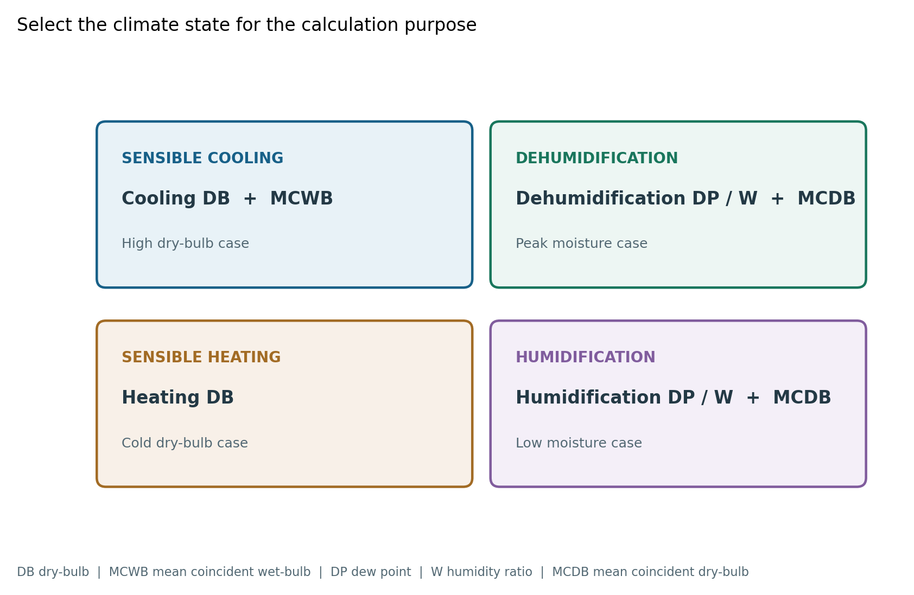
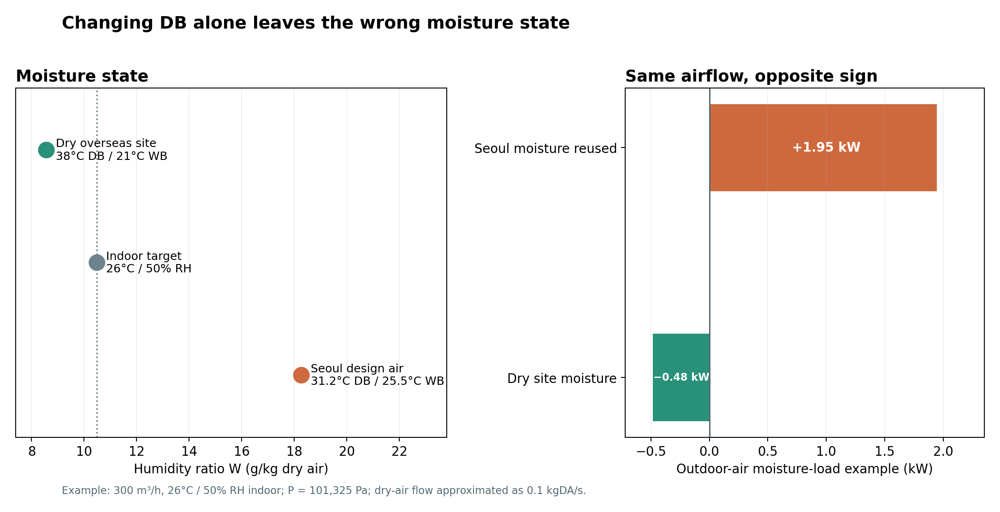

해외 현장 발령을 받은 후배가 이렇게 묻는다고 해볼게요. “국내 프로젝트처럼 서울 값을 넣으면 안 되나요? ASHRAE를 보니 0.4%, 1%, 2%가 다 있던데 뭘 써야 하죠?” 첫 질문의 답은 분명히 “안 됩니다”이고, 두 번째 질문의 답은 “실마다 다릅니다”입니다. 오늘은 그 이유를 처음부터 정리해보겠습니다.
지난 글에서 국내 프로젝트는 「건축물의 에너지절약설계기준」 [별표 7]의 17개 지역 값을 쓴다고 정리했습니다(AC-001 외기조건 글). 해외에는 그 표가 없습니다. 그래서 두 가지를 직접 정해야 합니다. 어느 관측지점의 자료를 쓸 것인가, 그리고 그 지점의 어느 백분위를 쓸 것인가입니다.
먼저 결론부터 말씀드릴게요
- 검토 순서는 현지 강제기준 → 발주처·Project Design Criteria → ASHRAE → 당사 기준입니다. 법과 계약이 먼저입니다.
- 별도 지정이 없으면 2025 ASHRAE Handbook—Fundamentals 14장 「Climatic Design Information」의 해당 관측지점 자료를 씁니다.
- 발전소의 Control Room, 중요 전기·발전설비 공간은 Cooling 0.4% / Heating 99.6%를 우선 검토합니다.
- Office, Laboratory, Locker Room 같은 일반 공조공간은 Cooling 1% / Heating 99%를 기본으로 봅니다.
- 냉방은 DB + MCWB, 제습은 DP·수분비 + MCDB, 난방은 Heating DB, 가습은 겨울 DP·수분비 + MCDB로 계산 목적마다 다른 값을 씁니다.
해외 프로젝트의 최종 온도·습도 숫자는 관측지점마다 다르기 때문에, 이 기준은 숫자 하나를 정하지 않고 고르는 방법과 기록하는 방법을 정합니다.
ASHRAE 기후자료는 어떤 자료인가
2025년판 ASHRAE Fundamentals 14장과 ANSI/ASHRAE Standard 169-2025는 전 세계 12,424개 관측지점의 기후설계자료를 같은 체계로 제공합니다. 2021년판보다 지점 수가 35% 늘었습니다. 지점마다 다음 값이 들어 있습니다.
| 구분 | 제공 값 | 어디에 쓰나 |
|---|---|---|
| Cooling DB | 0.4%, 1%, 2% DB + MCWB | 냉방 현열, 일반 냉방장비 용량 |
| Wet-Bulb | 0.4%, 1%, 2% WB + MCDB | 외기 총열, 증발냉각, 냉각탑 |
| Dehumidification | 0.4%, 1%, 2% DP + 수분비 + MCDB | 제습부하, 피크 수분 |
| Heating DB | 99.6%, 99% DB | 난방장비 용량 |
| Humidification | 99.6%, 99% DP + 수분비 + MCDB | 겨울 가습부하 |
| 지점 정보 | 위치, WMO 번호, 표고 | 어느 지점인지, 대기압은 얼마인지 |
지점 수 확인: ASHRAE Climate Data Center, 2026년 10월 4일 확인.
0.4%, 1%, 2%는 무슨 뜻일까요?
백분위는 1년 중 외기가 그 설계값을 넘는 시간의 비율입니다. 1년 8,760시간으로 바꿔보면 감이 옵니다.
| Cooling 백분위 | 설계값을 넘는 시간 | 의미 |
|---|---|---|
| 0.4% | 약 35시간/년 | 극한 고온에 더 가깝게 설계 |
| 1% | 약 88시간/년 | 일반적인 설계조건 |
| 2% | 약 175시간/년 | 초과 시간을 더 허용 |
0.4%가 1%보다 “더 정확한 값”이라는 뜻은 아닙니다. 설비가 어느 정도의 극한까지 버티게 할 것인가의 차이입니다.
난방은 숫자가 반대입니다. Heating 99%는 1년의 99%가 그 온도보다 따뜻하다는 뜻이니, 나머지 약 88시간은 더 추울 수 있습니다. 99.6%면 약 35시간입니다. 그래서 Cooling 1%와 Heating 99%, Cooling 0.4%와 Heating 99.6%가 같은 수준의 짝입니다.
하나 더. 국내 기준의 2.5%와 ASHRAE의 1%는 같은 값으로 바꿔 읽지 않습니다. 국내 2.5%는 냉·난방기간을 나눠 만든 분포가 분모이고, ASHRAE 1%는 1년 전체가 분모입니다. 해외 백분위를 정하는 근거는 국내 기준과의 환산이 아니라 아래의 공간별 기준입니다.
같은 발전소 안에서도 실마다 백분위가 다릅니다
ASHRAE Handbook—HVAC Applications의 「Power Plants」 장은 발전소 공간별 외기 설계 백분위를 나눠서 제시합니다.
| 공간 | Cooling / Heating |
|---|---|
| Control Room, Control Equipment Room | 0.4% / 99.6% |
| Steam Turbine, Combustion Turbine, Steam Generator Area | 0.4% / 99.6% |
| Critical Electrical Equipment, Battery Room, Substation, 밀폐형 변압기실 | 0.4% / 99.6% |
| 대형 펌프, Valve Station, Diesel Generator Area | 0.4% / 99.6% |
| Office, Laboratory, Locker Room·Toilet, 공조 작업실 | 1% / 99% |
Control Room에는 DCS와 계장설비가 있습니다. 실내조건이 무너지면 사람이 덥고 추운 문제로 끝나지 않고 발전소 운전에 영향을 줄 수 있습니다. 그래서 초과 시간을 35시간 수준으로 줄입니다. Office는 일시적으로 설계온도를 벗어나도 플랜트 운전에 직접 영향이 없으니 1% / 99%로 장비 크기와 실내환경의 균형을 잡습니다.
모든 실에 0.4%를 쓰면 안전해 보이지만, 냉난방 장비와 전원 용량, 초기 비용이 함께 커집니다. 실의 중요도를 먼저 나누고 백분위를 고르는 것이 핵심입니다.
가장 더운 순간과 가장 습한 순간은 다릅니다
국내 [별표 7]은 여름 DB와 WB를 한 쌍으로 줍니다. ASHRAE에서는 가장 높은 DB와 가장 높은 WB를 따로 찾아 붙이면 안 됩니다. 두 값은 같은 시간에 나타나지 않을 수 있기 때문입니다.
- 냉방 현열: Cooling DB와, 그 DB가 나타날 때 같은 시간에 관측된 습구온도의 평균인 MCWB(Mean Coincident Wet-Bulb)를 씁니다. “그만큼 더운 날 실제로 얼마나 습했나”를 함께 보는 값입니다.
- 제습: 가장 더운 날이 가장 습한 날과 같지 않을 수 있으니, Dehumidification DP·수분비와 그때의 MCDB로 따로 검토합니다. 항온항습실, DOAS, 고온다습 지역, 외기량이 큰 계통에서는 이 조건이 코일 용량을 정하기도 합니다.
- 난방: 실내외 온도차로 정해지므로 Heating DB를 씁니다.
- 가습: 수분량 차이로 정해지므로 Heating DB가 아니라 겨울 Humidification DP·수분비를 씁니다.
| 계산 목적 | 쓰는 값 |
|---|---|
| 냉방 현열 | Cooling DB + MCWB |
| 외기 잠열·제습 | Dehumidification DP·수분비 + MCDB |
| 난방 현열 | Heating DB |
| 겨울 가습 | Humidification DP·수분비 + MCDB |

온도만 바꾸고 습도는 그대로 두면 생기는 일
해외 현장에서 가장 흔한 실수가 이것입니다. DB만 현장 값으로 바꾸고, 습도는 익숙한 국내 값을 그대로 두는 것. 숫자로 확인해보겠습니다.
외기 300㎥/h, 실내 26℃·50%(수분비 약 10.5g/kgDA)를 기준으로, 건조한 해외 현장을 DB 38℃·WB 21℃로 가정합니다.
- 서울 설계조건(31.2℃·25.5℃)의 수분비: 약 18.3g/kgDA
- 건조 현장(38℃·21℃)의 수분비: 약 8.6g/kgDA

현장 외기는 실내보다 건조합니다. 이 예시의 외기 수분차에서는 제습부하가 음수인데, 국내 습도를 그대로 두면 약 1.95kW의 양수로 계산됩니다. 이 값을 그대로 적용하면 코일·장비 선정에 불필요한 잠열부하가 들어갈 수 있습니다. 그래서 해외에서는 DB만 바꾸지 않고 습도까지 그 관측지점 자료를 씁니다.
과거 프로젝트 값을 그대로 가져오지 않습니다
예전 괌(Guam) 프로젝트에서 Cooling 4% / Heating 96%를 쓴 사례가 있습니다. 지금 ASHRAE의 대표 연간 설계조건은 Cooling 0.4·1·2%, Heating 99·99.6%이므로, 4% / 96%를 ASHRAE 기본값이라고 설명할 수는 없습니다.
그렇다고 틀린 값이라고 단정하지도 않습니다. 당시 발주처 요구조건, Project Design Criteria, 군·정부 기준, 엔지니어링 판단 중 무엇이었는지에 따라 정당했을 수 있습니다. 그래서 이런 값은 그 프로젝트의 사례로만 관리하고, 원래 근거를 확인한 뒤 재사용을 판단합니다. 지난 프로젝트에서 썼다는 이유로 복사하지 않고, ASHRAE에 0.4%가 있다는 이유로 모든 실에 0.4%를 쓰지도 않습니다.
프로젝트마다 남기는 기록표
관측지점을 정하면 아래 표를 채웁니다. 이 표가 그 프로젝트의 최종 외기 설계조건이 됩니다.
| 항목 | 기록할 값 |
|---|---|
| Project / Site | |
| ASHRAE Edition | 2025 Fundamentals |
| Station Name / WMO No. / Elevation | |
| 실 구분 | Critical / General / Project-specific |
| Cooling 백분위 · DB · MCWB | |
| Dehumidification DP · 수분비 · MCDB | |
| Heating 백분위 · DB | |
| Humidification DP · 수분비 · MCDB |
표고(Elevation)는 꼭 같이 적으세요. 고지대 현장은 대기압이 낮아 같은 온습도라도 수분비가 달라집니다. 국내 기준서의 습공기 계산은 해면 표준 대기압 101,325Pa를 가정하므로, 고지대에서는 대기압부터 바꿔서 계산합니다.
제가 해외 외기조건을 검토하는 순서
- 현지 강제기준과 발주처 요구조건에 외기조건이 지정돼 있는가?
- ASHRAE 판(Edition), 관측지점명, WMO 번호를 기록했는가?
- 관측지점과 실제 현장의 거리·표고 차이를 확인했는가?
- 실을 Critical / General / Project-specific으로 나눴는가?
- 고른 백분위와 그 이유를 기록했는가?
- Cooling DB와 MCWB를 한 쌍으로 썼는가? 최고 DB와 최고 WB를 따로 붙이지 않았는가?
- 제습이 중요한 계통에 피크 수분 조건을 따로 검토했는가?
- Heating DB와 가습 조건을 구분했는가?
- 과거 프로젝트 값을 근거 없이 복사하지 않았는가?
- 장비 제조사의 Ambient 요구조건이 더 엄격하지 않은가?
발주처가 “왜 Office와 Control Room의 외기조건이 다르냐”고 물으면 저는 이렇게 설명합니다.
“Control Room과 주요 전기·발전설비는 외기조건이 설계값을 넘었을 때 플랜트 운전에 영향을 줄 수 있어, ASHRAE Power Plants 기준에 따라 Cooling 0.4% / Heating 99.6%를 적용했습니다. Office 등 일반 공조공간은 Cooling 1% / Heating 99%를 적용했습니다. 냉방은 DB와 동시발생 습구온도(MCWB)를 함께 쓰고, 제습과 가습은 별도의 습도조건으로 검토했습니다.”
앱에서는 어떻게 하나요
솔직하게 말씀드리면, 지금 제 HVAC 부하·용량 계산서 앱은 국내 17개 지역용입니다. 해외 관측지점의 DB·MCWB·제습·가습 조건을 넣는 기능은 아직 없습니다.
그리고 앱의 “외기온 직접입력”은 해외 현장용이 아닙니다. 냉방 DB만 바꾸고 습구온도는 선택한 국내 지역 값을 그대로 쓰기 때문에, 위에서 본 “온도만 바꾸고 습도는 그대로” 실수가 그대로 재현됩니다. 해외 현장은 이 기준서의 기록표를 먼저 채우고 계산해주세요. 해외 지점 입력은 실 중요도별 백분위와 MCWB·제습 조건까지 한 번에 다루도록 설계해서 추가하겠습니다. 앱의 직접입력 칸에도 이 제한을 안내해두었습니다. 그 판단 과정은 이번 주 개발 기록에 적었습니다.
국내 프로젝트라면 오늘 글의 원리가 그대로 들어간 계산을 앱에서 바로 해보실 수 있습니다.
👉 HVAC 부하·용량 계산서 써보기 · 앱 소개 보기
관련 기준: 국내 외기조건 AC-001, 실내 설계조건 AC-003, 가습 대상실 AC-004, 부하계산 방법 AC-005, 안전율 AC-012, 환기량 AC-017. 외부 기준: 2025 ASHRAE Handbook—Fundamentals 14장, ASHRAE Handbook—HVAC Applications 「Power Plants」, ANSI/ASHRAE Standard 169-2025.